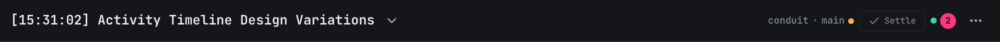
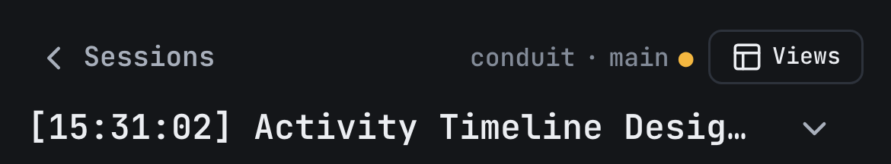

Session header: git pill and a consistent top-right corner
2026-10-05 · for c209 / q5u6. Frames are drawn at real app size and shown at 1.75×. Pick one variant (or mix), and I build it.
Today


- Five different treatments in one corner: bare grey text (git), a bordered button (Settle), a bare green dot, a solid pink count, a bare ⋯.
- It shows the wrong checkout. The header reads the project's git, but each session already carries its own (
session.git: branch, worktree, dirty, ahead/behind, detached head, rebase/merge in progress, merged). A session running in a linked worktree shows the main checkout's branch today. All variants below read the session's git and fall back to the project's. - The pink "2" reads like an alert. It's how many browsers are connected. It uses the same accent as the unread count.
Shared rules for the git pill (all variants)
One pill, same recipe as Settle and the skills chip: Button secondary sm, 24px tall, 1px border, 6px radius. It's a button: tap opens the detail popover (desktop) or sheet (phone).
Tap → details
A · One recipe everywhere
Every control in the corner is the existing secondary sm button. The connection dot and pink count merge into one quiet pill. Least new code: it's the recipe Settle and skills already use.
Desktop
Phone (390px)
Row 1 drops the project name from the pill (the sheet shows it). Order per c209: skills · git · Views.
B · One segmented toolbar chosen 2026-10-05
Decided: Views folds into ⋯ on phone (same menu as the island); the project label is the basename of the project's primary directory and shrinks first, never below 4 characters.
Skills, git and Settle share one border with dividers, so the corner reads as a single control. Connection becomes a bare dot + count, ⋯ stays ghost. Calmest look; needs a small new "segmented" wrapper.
Desktop
Phone (390px)
C · Info is filled, actions are outlined
Things that describe the session (skills, git) are soft filled pills; things that do something (Settle) keep the border. Connection is a bare dot + count. Clearest meaning, but two recipes side by side.
Desktop
Phone (390px)
Not changing
- Phone touch targets stay 44px via the existing
touchTargethit area; only the paint is 24px. - The instance badge, unread chip and state chips stay where c209 put them (row 2 on phone, beside the title on desktop).
- Picking a branch or worktree for a new session is x259, next after this.